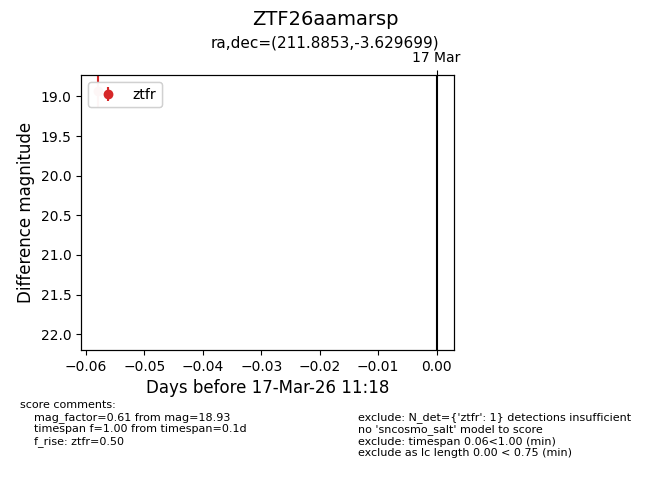
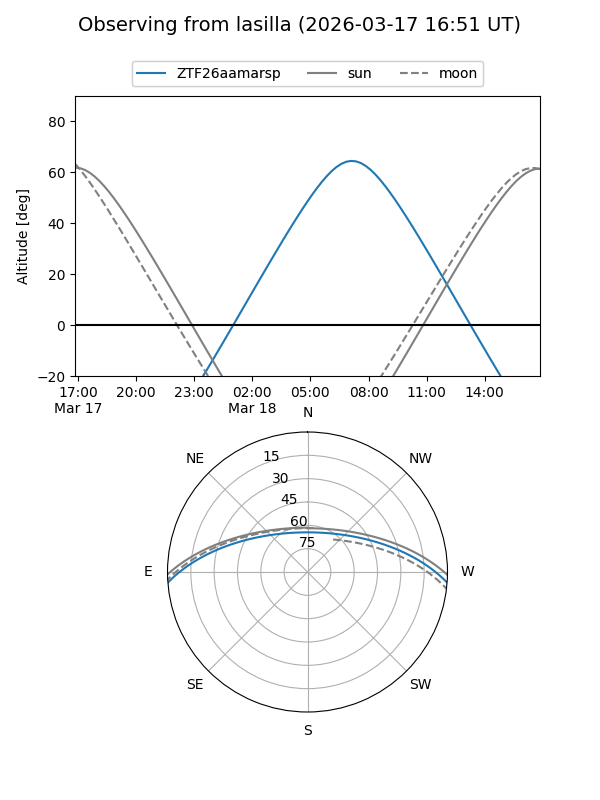
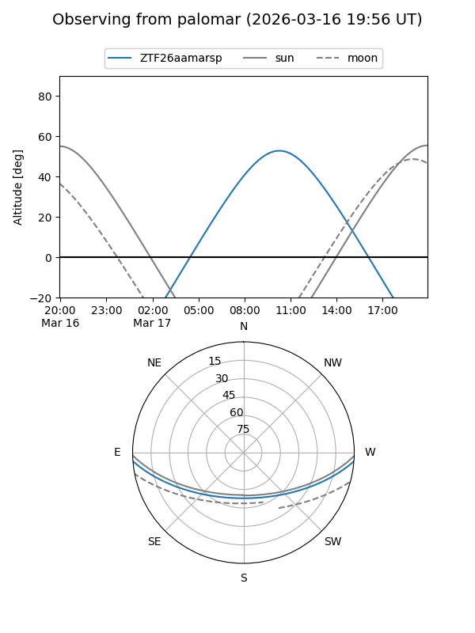

ZTF26aamarsp
Target ZTF26aamarsp at 2026-03-17 11:20
Aliases and brokers:
FINK: link
Lasair: link
ALeRCE: link
alt names
ZTF26aamarsp (ztf,fink_ztf)
Coordinates:
equatorial (ra, dec) = 211.8853,-3.62970
equatorial (HMS+DMS) = 14:07:32.47,-03:37:46.92
galactic (l, b) = (336.7011,+54.17559)
Flags:
Photometry:
last ztfr=18.93
1 ztfr detections
Lightcurve

Visibility


Additional plots